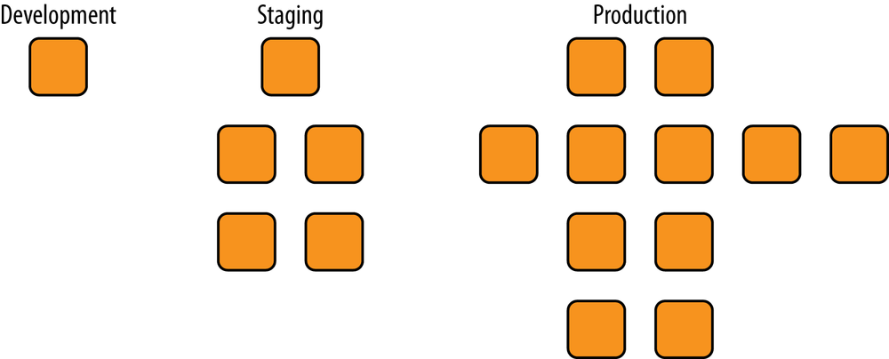
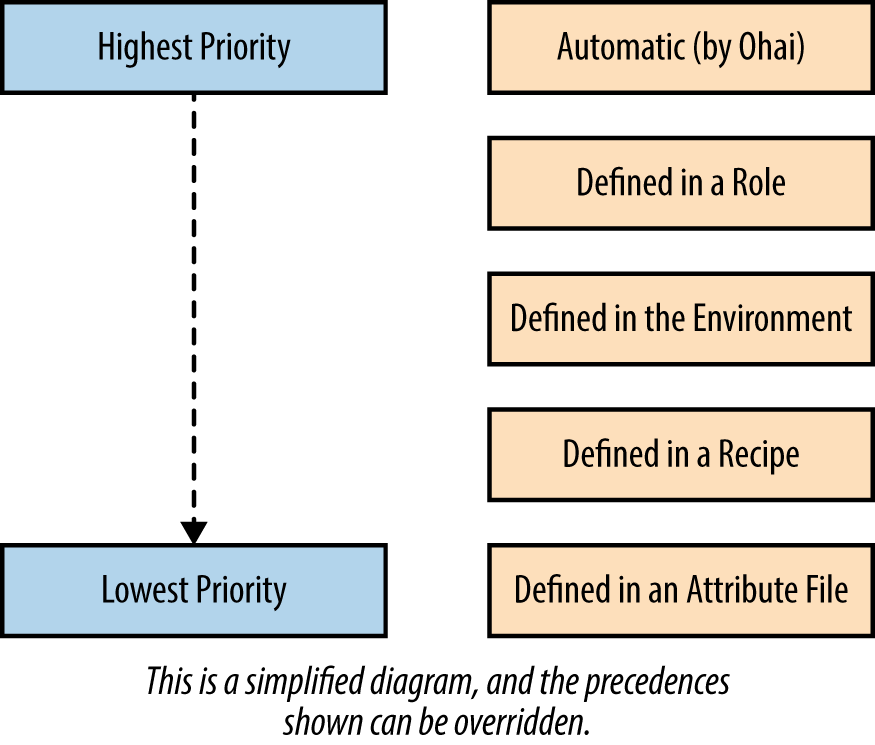
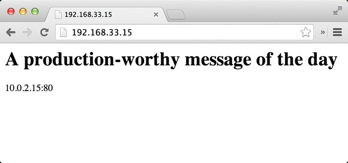
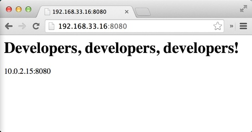

第十三节 环境
Chef服务器支持“环境”功能为软件开发生命周期中的每一个阶段建模

环境反映模式和工作流， 可以用来表示应用程序的各个生命阶段
- 开发
- 测试
- 模拟生产环境
- 生产环境
默认情况下，Chef服务器只有一个名为default的环境。
环境可以包含配置基础架构所需的属性, 比如 某
- 付款服务
API的URL - 程序包存储源的位置
- 所需使用的
Chef配置文件的版本
和角色不一样，环境支持版本约束（指定在该环境下使用的菜谱的版本），因此允许在Chef服务器上对不同的环境提供不同的资源。
你可能会认为如果使用Test Kitchen进行测试井在测试后销毁侧试节点便不需要使用多个环境，但事实不是这样，即使你使用Test Kitchen常常也会希望在发布到生产环境前在和生产环境类似的真实的服务器环境中部署自己的Chef配置代码
1、创建一个开发环境
我们可以使用像创建Chef数据包或角色一样的方法创建环境。在本书的例子中我们可以在chef-playground目录下创建一个表示环境的目录,默认可命名为envrionments。
$ chef-zero --port 9501
>> Starting Chef Zero (v14.0.13)...
>> WEBrick (v1.5.0) on Rack (v2.0.7) is listening at http://127.0.0.1:9501
>> Press CTRL+C to stop
...
$ cd chef-playground
$ mkdir environments
我们将创建一个.json文件来表示新的环境。基本的环境需要拥有name:（名字）和 description:（描述）环境也同时可以包含对菜谱的版本约束。
能够在某个环境内指定特定的菜讲版本是环境最有用的功能, 请创建chef-playground/roles/dev.json文件
chef-playground/environments/dev.json
{
"name": "dev",
"description": "For developers!",
"cookbook_versions": {
"apache": "= 0.2.0"
},
"json_class": "Chef::Environment",
"chef_type": "environment"
}
运行knife environment from file并传递刚创建的dev.json文件。
knife environment from file命令会假设dev.json文件在名为environment的子目录中而不是当前目录
$ knife environment from file dev.json
Updated Environment dev
$ knife environment show dev
chef_type: environment
cookbook_versions:
apache: = 0.2.0
default_attributes:
description: For developers!
json_class: Chef::Environment
name: dev
override_attributes:
2、属性和环境
环境可以包含属性让我们通过创建一个表示生产（production) 环境的.json文件, 这个环境将会约束apache菜谱的版本到0.1.1版本
同时， 让我们确保在生产环境下 每日消急显示一个对于生产环境自己的特别牙肖息。现在让我们来创建chef-playground/roles/production.json文件
chef-playground/roles/production.json
{
"name": "production",
"description": "For prods!",
"cookbook_versions": {
"apache": "= 0.1.0"
},
"json_class": "Chef::Environment",
"chef_type": "environment",
"override_attributes": {
"motd": {
"message": "A production-worthy message of the day"
}
}
}
$ knife environment from file production.json
Updated Environment production
$ knife environment show production
chef_type: environment
cookbook_versions:
apache: = 0.1.0
default_attributes:
description: For prods!
json_class: Chef::Environment
name: production
override_attributes:
motd:
message: A production-worthy message of the day
考虑到属性的优先级别时环境属性的优先级可能会使整个溉念变得有些复杂。如图所示，环境属性的优先级比角色属性的优先级低，但比菜谱配方单或属性文件的属性优先级高

由于环境可以搜盖并指定特定的菜谱版本，环境的属性也应拥有比默认更高的优先级
因此在使用环填属性时往往使用override attributes而不是default attributes
override_attributes:
motd:
message: A production-worthy message of the day
3、完整实例
apache菜谱并使用要在生产环魔巾用到的环境和角色来进行次完整的实例。
3-1 模拟生产环境
创建个名为cehf-zero的目录。其结构与chef-playgound和chef-repo差不多拥有cookbooks, environments, 和 roles子目录口在创建这个目录后将其作为工作目录：
$ mkdir chef-zero
$ cd chef-zero
让我们假设我们的apache菜谱已经准备就绪, 我们将在生产环境中使用属性环魄和角色, 首先让我们用Test Kitchen来模拟生产环境。
chef-zero/environments目录中创建一个环境定义。这会代表一个production（生产）环境．在此环境中我们也将以重写级别定义node['motd']['message']属性
chef-zero/environments/production.json
{
"name": "production",
"description": "For prods!",
"cookbook_versions": {
"apache": "= 0.1.0"
},
"json_class": "Chef::Environment",
"chef_type": "environment",
"override_attributes": {
"motd": {
"message": "A production-worthy message of the day"
}
}
}
$ mkdir roles
$ touch /roles/webserver.json
我们在生产环境中使用一个webserver角色来表示网页服务器节点。创建chef-zero/roles/webserver.json文件。它的运行清单包含apahce配方单和默认级别的node['apache']['port']属性。我们将使用这个属性来展示如何根据环境改变菜谱的行为
chef-zero/roles/webserver.json
{
"name": "webserver",
"description": "Web Server",
"json_class": "Chef::Role",
"chef_type": "role",
"default_attributes": {
"apache": {
"port": 80
}
},
"run_list": [
"recipe[apache]"
]
}
$ tree chef-zero/
chef-zero/
├── cookbooks
├── environments
│ └── production.json
└── roles
└── webserver.json
3 directories, 2 files
我们将为本章的例子创建个新版本的apache菜谱，向它添加一些新东西。我们可以通过运行chef generate cookbook或knife cookbook create命令创建apache菜谱取决于 你使用Chef研发包还是客户端。
Chef Development Kit:
$ cd cookbooks
$ chef generate cookbook apache
$ cd apache
Chef Client:
$ knife cookbook create apache --cookbook-path .
$ cd apache
$ kitchen init --create-gemfile
$ bundle install
在本例中，我们用chef_zero启动器，因为我们需要用到Chef服务器的功能。确保provisoner：板块设定了正确的值。我们需要Test Kitchen为我们启动Chef Zero实例。
同时在provisioner：中，告诉Test Kitchen在哪里寻找roles和environments目录(相对于kitchen.yml的位置）:
provisioner:
name: chef_zero
nodes_path: ../../nodes
environments_path: ../../environments
always_update_cookbooks: true
注意，我们在suites：设定中设定Test Kitchen套件名字为prod
每一个环境都会拥有它自己的测试套件配置，我们通过这种方式区分它们的测试配置。在本例中，我们设定测试生产环境的套件名为prod
同时，我们借此介绍suites:设定的新语句。
通过client_rb和environment语句为我们的沙盒节点在它的/etc/chef/client.rb中设定环境
suites:
- name: prod
provisioner:
client_rb:
environment: production
...
一个节点在同一时间只能隶属于一个环境。环境在节点的/etc/chef/client.rb文件中指定。 如果文件中没有设定环境，节点则使用默认环境，名为defau1t。
在此虚拟环境中，我们用Test Kitchen将想要的环境写到测试节点的/etc/chef/client.rb文件中
然而在真实环境中，应该用chef-client::config配方单来设定目标节点的/etc/chef/client.rb文件中的environment设定。
可以通过使用以下属性来控制设定的ssl_verify_node一样：
node.default['chef_client']['config']['environment'] = 'production'
以下例子同时展示了我们可以通过suites:设定来设定private_network（私有网络）IP地址
suites:
- name: prod
...
driver:
network:
- ["private_network", {ip: "192.168.33.15"}]
当一个值在Test Kitchen的provisioner:中被设定时会披继承到所有suites:设定中．
在本例中我们只想要我们生产环掩的测试沙盒环境拥有不同的IP地址因此我们只在suites下我们的特定环境内指定private_network设定
---
driver:
name: vagrant
provider: vmware_desktop
provisioner:
name: chef_zero
nodes_path: ../../nodes
environments_path: ../../environments
always_update_cookbooks: true
platforms:
- name: centos65
driver:
box: learningchef/centos65
box_url: learningchef/centos65
suites:
- name: prod
provisioner:
client_rb:
environment: production
driver:
network:
- ["private_network", {ip: "192.168.33.15"}]
run_list:
- recipe[apache::default]
attributes:
使用kitchen list检查kitchen.yml否有语法错误。输出应该和一下类似
$ kitchen list
Instance Driver Provisioner Verifier Transport Last Action Last Error
prod-centos65 Vagrant ChefZero Busser Ssh <Not Created> <None>
编辑apache/metadata.rb文件, 填入maintainer, maintainer_email, and license信息。
name 'apache'
maintainer 'ja xi'
maintainer_email 'jx@ss.com'
license 'All Rights Reserved'
description 'Installs/Configures apache'
long_description 'Installs/Configures apache'
version '0.1.0'
chef_version '>= 14.0'
因为我们会在达个版本的apache菜谱中使用属性请创建default.rb属性文件。
Chef Development Kit:
$ chef generate attribute default
Chef Client:
$ touch attributes/default.rb
$ chef generate attribute default
Recipe: code_generator::attribute
* directory[/Users/.../Devops_sap/Chef_Doc/learningchef/chap11/chef-zero/cookbooks/apache/attributes] action create
- create new directory /Users/.../Devops_sap/Chef_Doc/learningchef/chap11/chef-zero/cookbooks/apache/attributes
* template[/Users/.../Devops_sap/Chef_Doc/learningchef/chap11/chef-zero/cookbooks/apache/attributes/default.rb] action create
- create new file /Users/.../Devops_sap/Chef_Doc/learningchef/chap11/chef-zero/cookbooks/apache/attributes/default.rb
- update content in file /Users/.../Devops_sap/Chef_Doc/learningchef/chap11/chef-zero/cookbooks/apache/attributes/default.rb from none to e3b0c4
(diff output suppressed by config)
如示例attributes/default.rb中设定一些默认属性。为了展示属性的优先级我们在这设定node['apache']['port']和node['motd']['message']的默认值井设定成与在角色和环境文件中不同的值口我们同时也添加了一个node['apache']['document_root']属性来设定网页服务器index.html文件的位置
touch attributes/default.rb
/apache/attributes/default.rb
default['apache']['document_root'] = '/var/www/html'
default['apache']['port'] = 3333
default['motd']['message'] = 'Default message'
recipes/default.rb
加一个新的template资源在目标节点上创建custom.conf文件以及directory资源以创建所需的目录。
custom.conf即可是一个配置apache网页服务器设定的可选的配置文件。在这个配置文件中，我们将设定默认的监听端口和文档根目录。
template '/etc/httpd/conf.d/custom.conf' do
...
variables(
:document_root => node['apache']['document_root'],
:port => node['apache']['port']
)
...
end
在创建模板文件时, 你可以通过varibales()属性传递一个映射来指定模板中变量的值。 这样我们可以从配方单中传递变量给模板， 使模板中也可以使用更短的变量名
apache/recipes/default.rb
#
# Cookbook Name:: apache
# Recipe:: default
#
# Copyright (C) 2014
#
#
#
package 'httpd'
service 'httpd' do
action [ :enable, :start ]
end
# Add a template for Apache virtual host configuration
template '/etc/httpd/conf.d/custom.conf' do
source 'custom.erb'
mode '0644'
variables(
:document_root => node['apache']['document_root'],
:port => node['apache']['port']
)
notifies :restart, 'service[httpd]'
end
document_root = node['apache']['document_root']
# Add a directory resource to create the document_root
directory document_root do
mode '0755'
recursive true
end
template "#{document_root}/index.html" do
source 'index.html.erb'
mode '0644'
variables(
:message => node['motd']['message'],
:port => node['apache']['port']
)
end
Chef Development Kit:
$ chef generate template index.html
Chef Client - Linux/Mac OS X:
$ touch templates/default/index.html.erb
$ chef generate template index.html
Recipe: code_generator::template
* directory[/Users/.../Devops_sap/Chef_Doc/learningchef/chap11/chef-zero/cookbooks/apache/templates] action create
- create new directory /Users/.../Devops_sap/Chef_Doc/learningchef/chap11/chef-zero/cookbooks/apache/templates
* template[/Users/.../Devops_sap/Chef_Doc/learningchef/chap11/chef-zero/cookbooks/apache/templates/index.html.erb] action create
- create new file /Users/.../Devops_sap/Chef_Doc/learningchef/chap11/chef-zero/cookbooks/apache/templates/index.html.erb
- update content in file /Users/.../Devops_sap/Chef_Doc/learningchef/chap11/chef-zero/cookbooks/apache/templates/index.html.erb from n
one to e3b0c4
(diff output suppressed by config)
/templates/default/index.hmtl.erb
<html>
<body>
<h1><%= @message %></h1>
<%= node["ipaddress"] %>:<%= @port %>
</body>
</html>
Chef Development Kit:
$ chef generate template custom
Chef Client - Linux/Mac OS X:
$ touch templates/default/custom.erb
填充文件内容。我们使用这个apache配置文件来设定网页服务器监听的端口（Listen设置）以及DocumentRoot设置。
可以在模板中通过<% %>格式写条件逻辑（而用＜％= %>来表示变量）。
同时，如果结尾的符号以横杠开头，比如-%>这一行将不会被渲染在输出的文件中。
这三行将被处理<% if @port != 80 -%>, Listen <%= @port %> and <% end -%>而不会都输出。当输出最后的结果文件时，这三行变为一行Listen <%= @port %>因为其他两行的结尾符号为 -%>, 同时, 输出的这一行只有当if语旬中的条件返回真时才会坡轴出否则将会被略过
我们需要达样的条件逻辑因为apache只有在监听端口不为80时才需要在配置文门中指定 Listen配置。如果端口80井在Listen中指定，apache将会报错。
/templates/default/custom.erb
<% if @port != 80 -%>
Listen <%= @port %>
<% end -%>
<VirtualHost *:<%= @port %>>
ServerAdmin webmaster@localhost
DocumentRoot <%= @document_root %>
<Directory />
Options FollowSymLinks
AllowOverride None
</Directory>
<Directory <%= @document_root %>>
Options Indexes FollowSymLinks MultiViews
AllowOverride None
Order allow,deny
allow from all
</Directory>
</VirtualHost>
- 这一行不会写入到最终输出的文件
- 只有这一行将会写入到输出的文件
- 这一行不写入到最终输出出的文件

3-2 模拟开发环境
假设我们要对apache菜谱开始一个新的开发周期， 加一些新的功能。对于本戏的展示意图
我们不在乎新功能具体是什么， 只希望新的开发不会形响现有的生产环境下的0.1.0版本的菜谐。我们使用一个dev环境进行开发
apache/metadata.rb
name 'apache'
maintainer 'Mischa Taylor'
maintainer_email 'mischa@misheska.com'
license 'MIT'
description 'Installs/Configures apache'
long_description 'Installs/Configures apache'
version '0.2.0'
$ kitchen converge prod-centos65
...
Missing Cookbooks:
------------------
Could not satisfy version constraints for: apache
...
Chef Client failed. 0 resources updated in 1.626076356 seconds
[2014-08-22T17:59:26-07:00] ERROR: 412 "Precondition Failed "
[2014-08-22T17:59:26-07:00] FATAL: Chef::Exceptions::ChildConvergeError:
Chef run process exited unsuccessfully (exit code 1)
>>>>>> Converge failed on instance <prod-centos65>.
>>>>>> Please see .kitchen/logs/prod-centos65.log for more
details
>>>>>> ------Exception-------
>>>>>> Class: Kitchen::ActionFailed
>>>>>> Message: SSH exited (1) for command: [sudo -E
chef-client -z --config /tmp/kitchen/client.rb --log_level info
--chef-zero-port 8889 --json-attributes /tmp/kitchen/dna.json]
>>>>>> ----------------------
environments/dev.json
{
"name": "dev",
"description": "For developers!",
"cookbook_versions": {
"apache": "= 0.2.0"
},
"json_class": "Chef::Environment",
"chef_type": "environment",
"override_attributes": {
"apache": {
"port": 8080
},
"motd": {
"message": "Developers, developers, developers!"
}
}
}
apache/.kitchen.yml
---
driver:
name: vagrant
provider: vmware_desktop
provisioner:
name: chef_zero
nodes_path: ../../nodes
environments_path: ../../environments
# always_update_cookbooks: true
platforms:
- name: centos65
driver:
box: learningchef/centos65
box_url: learningchef/centos65
suites:
- name: prod
provisioner:
client_rb:
environment: production
driver:
network:
- ["private_network", {ip: "192.168.33.15"}]
run_list:
- recipe[apache::default]
attributes:
- name: dev
provisioner:
client_rb:
environment: dev
driver:
network:
- ["private_network", {ip: "192.168.33.16"}]
run_list:
- recipe[apache::default]
attributes:
$ kitchen list
Instance Driver Provisioner Last Action
prod-centos65 Vagrant ChefZero Converged
dev-centos65 Vagrant ChefZero <Not Created>
$ kitchen converge dev-centos65

4、本节小结
- 创建一个开发环境
- 属性和环境
- 完整实例
$ knife environment from file dev.json
$ knife environment show dev
$ knife environment show production
$ chef generate template index.html
$ chef generate template custom